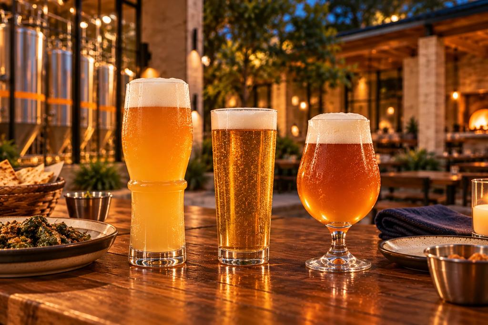
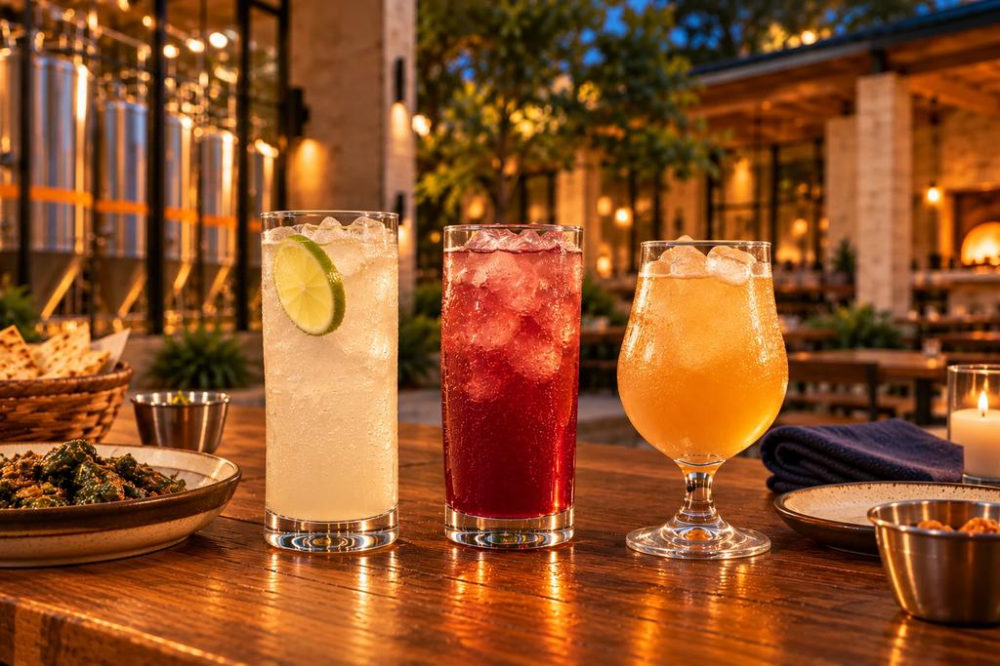

The beer
Brewed for the food.
Beer and zero-proof drinks, designed together with the kitchen.
The idea
Beer designed alongside the kitchen, not apart from it.
At NASHA the beer list is not a separate menu. Each beer is chosen for the dishes it should meet: bright bubbles that reset the mouth after a bite, a soft wheat beer that answers a rich braise, a clean lager that cools the heat.
The envisioned opening family
Five beers.
NASHA Hefeweizen
Soft, hazy wheat beer with banana and clove. Made for rich, spiced food.
Meets · Goat Birria
Mexican-Style Lager
Crisp, clean and cold. The easy one that cools the heat.
Meets · Chicken 65 Totopos
Vienna Amber
Toasty and smooth. Built for char and slow cooking.
Meets · Butter Chicken & Poblano Quesadilla
Pilsner
Bright and precise, with a clean bitter finish.
Meets · Gobi Taco
Witbier
Hazy and citrusy, with soft wheat and orange peel.
Meets · Paneer Tikka Taco
Three of the five are shown in the picture above. Each beer is envisioned for the dish named beside it.

Zero-proof
Poured with equal care.
Zero-proof drinks are part of the table, not an afterthought: clear, bright and made to meet the same dishes.
Five ideas
For everyone at the table.
Fruit, lime and salt cooler
Meets · Chicken 65 Totopos
Spiced citrus sparkler
Meets · Paneer Tikka Taco
Hibiscus and tamarind tea
Meets · Goat Birria
Lime and herb cooler
Meets · Gobi Taco
Cultured dairy, fruit and spice drink
Meets · Butter Chicken & Poblano Quesadilla

The bar
A bar that belongs to the food.
A long pecan bar with a window into the tanks, built around the kitchen and the glass.